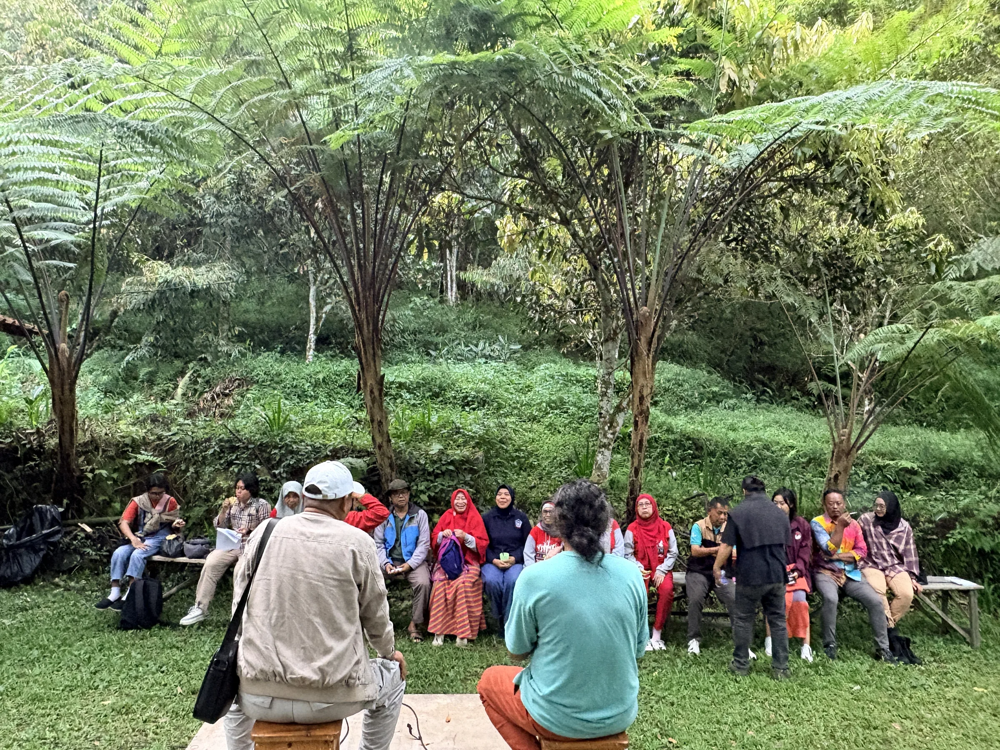
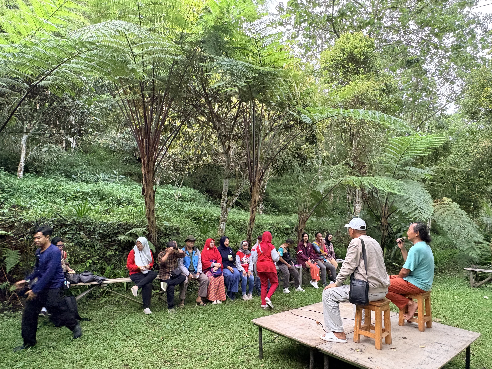

Origin · Bumi Seni Tarikolot
Born at Bumi Seni Tarikolot.
The place where KUDAKU began — and the living ground it keeps returning to.
A forest-based cultural ecosystem.
Bumi Seni Tarikolot is a cultural and nature space at the foot of Mount Ciremai — home to over a decade of grassroots practice in art, nature, knowledge, and community.
It is the initiator of KUDAKU: the origin that named the platform and gave it its first home, its first people, and its first table.


A living laboratory.
Bumi Seni Tarikolot is where KUDAKU's ideas are tested in real soil — among real trees, real people, and real food.
It is the platform's first field site: the place where a program can be prototyped, tasted, and understood before it travels elsewhere.
KUDAKU is its own platform.
Born at Bumi Seni Tarikolot, KUDAKU carries its own name, its own direction, and its own ambition — from Kuningan to Jawa Barat, to Nusantara, to the world.
Desa Sukamukti · Kuningan · Jawa Barat.
At the foot of Mount Ciremai — where the platform takes root.